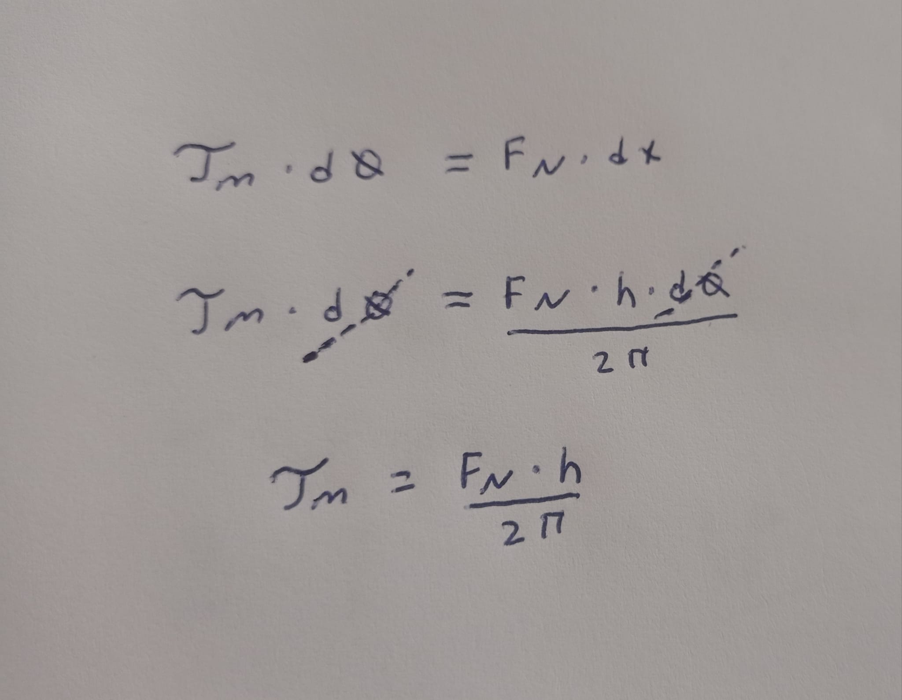
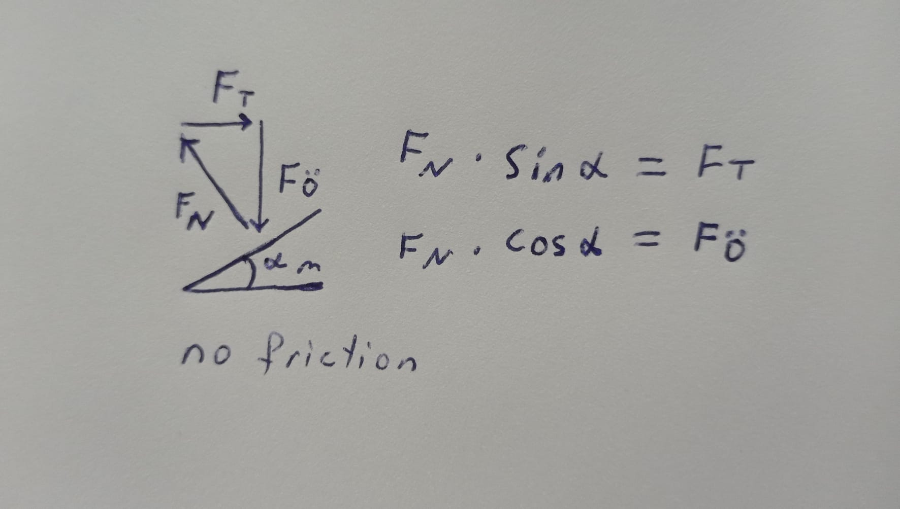

Controlling Linear Actuator by Entering Length
A4988 Stepper Motor Pins:

Vdd and GND: Should be connected to the 5v and GND parts of the Arduino.
Vmot and GND: Should be connected to 12 volt and GND to provide the 12 volt needed by the stepper motor.
1A,1B,2A,2B: Pins to which the stepper motor is connected.
Dır: Controls the direction of the motor.
Step: Controls the steps.
MS1, MS2, MS3: Microstep Selection Pins.
Sleep and Reset: When they are connected to each other, the controller becomes active.
En: When the Enable pin is active, the motor is grounded. We can limit the power usage by making this pin active and passive.
| Micro step Mode | MS1 | MS2 | MS3 |
| Full Step | low | low | low |
| Half Step | high | low | low |
| Quarter Step | low | high | low |
| Eighth Step | high | high | low |
| Sixteenth Step | high | high | high |
For one revolution needed steps are calculated as;
Full Step mode
$$\frac{360}{1.8{^\circ}} = 200$$
Half step;
$$\frac{360}{0.9{^\circ}} = 400$$
Quarter step;
$$\frac{360}{0.45{^\circ}} = 800$$
Eighth step;
$$\frac{360}{0.225{^\circ}} = 1600$$
Sixteenth step;
$$\frac{360}{0.1125{^\circ}} = 3200$$
Stepper Motor Controller Connections:
Stepper motor model is: 17HS4401S

Trapezoidal lead screw motion principle:

The screw rotates, the nut does not rotate, the nut moves along the screw.
Linear Actuator:
Linear actuators are created by properly combining the stepper motor and trapezoidal lead screw. With each step of the stepper motor, the part attached to the screw shaft moves by the length of the Lead. It is used to move a load back and forth.
$$L = p × n_s$$
$$L = Lead of thread.$$
$$P = Thread pitch.$$
$$n_s = Number of thread starts.$$
Length Calculation in Code:
$$toplamAdim = (mmFinal / 8) × stepsPerRevolution$$
The specified 'stepsPerRevolution' is the number of steps required for the stepper motor to complete one revolution. The specified 'stepsPerRevolution' is the number of steps required for the stepper motor to complete one revolution.
$$L = p × n_s$$ The number of 'starts' of the used shaft: $$n_s = 4$$
Pitch value of shaft: $$p = 2$$
Lead of thread is : $$L = 8$$
So when the 'stepsPerRevolution' is completed, the shaft moves 8 mm. By multiplying the formula by 1/8, we ensure that the shaft moves 1 mm when the 'stepsPerRevolution' is completed. In this way, we can determine the 'mmFinal' value as the length we want our part to move and ensure that it moves at the desired length. When we equate this equation to the toplamAdim command, we obtain the number of steps the stepper motor must take to cover the specified distance.
T8 Trapezoidal lead screw:

Calculating the force created by the torque applied by the stepper motor on the shaft
In order to find the force created by the motor torque on the pushed part, we first need to know the structure of the shaft. Trapezoidal shafts are similar in structure to inclined planes. While inclined planes gain force, they also cause loss in distance.


h = length of lead: 8 mm
D = diameter: 8 mm
C = Circumference: π $\times$ 8 = 25,13 mm
Length of Helix: $\sqrt{25.13^{2} + 8^{2}}$ = 26,34 mm
Formula for converting stepper motor torque into force

Torque work formula and force work formula

Equality of the number of turns of the stepper motor and the shaft helix length

$$T_M = Stepper motor torque: 430Nmm$$
$$h = 8 mm$$
$$sin(α) = h / length of helix = 0,304 mm => α = 18°$$
$$T_M = (8F_N)/(2π) => T_M = 1,27F_N => F_N = 338,58 N$$

$$F_T = F_N × sin(18) => F_T = 104,62 N$$
$$F_Ö = F_N × cos(18) => F_Ö = 322.01 N$$

when friction force acts:
Real life systems are under the influence of friction force. In order for systems to move, they must be under the influence of a force large enough to overcome the friction force. The reason why the nut does not move on the non-moving nuts of trapezoidal shafts is that there is no force large enough to overcome the friction force. The situation where the force applied to the nut does not move the nut is called autoblocking.
autoblocking requirement:
α ≤ p
Linear Actuator:

Controlling Linear Actuator by Entering Length in Arduino Uno (The relationship between the motor torque and the force pushing the nut is also explained.)
#define dirPin 6
#define stepPin 7
#define controlPin 2
#define dirPin 6
#define stepPin 7
#define controlPin 2
#define MS1 3
#define MS2 4
#define MS3 5
#define stepsPerRevolution 200
#define joyX A0
#define joyY A1
double xValue;
double yValue;
double toplamAdim;
#define mmFinal 50
int i;
int son;
double tMotor = 430 ; //stepper motor torque
double d = 8 ; //diameter
double h = 8 ; //lead
double circumference;
double lengthOfHelix;
double fN; //force exerted by stepper motor
double fT; //nut turning force
double fA; //axial force
double angle;
double value;
double angle2degree;
void setup(){
pinMode(stepPin, OUTPUT);
pinMode(dirPin, OUTPUT);
pinMode(MS1, OUTPUT);
pinMode(MS2, OUTPUT);
pinMode(MS3, OUTPUT);
Serial.begin(9600);
}
void loop() {
// stepper motor torque force relationship formulas
circumference = (3.1415 * d);
lengthOfHelix = sqrt((pow(circumference,2) + pow(h,2)));
value = h/lengthOfHelix;
angle = asin(value); // output is radian:
angle2degree = (angle * 180)/ 3,1415;
fN = (( tMotor * 2 * (3.1415))/ h);
fT = fN * sin(angle); // Input is radian:
fA = fN * cos(angle); // Input is radian:
Serial.print(" angle ");
Serial.print(angle2degree);
Serial.print("°");
Serial.print(" fN value ");
Serial.print(fN);
Serial.print(" fT value ");
Serial.print(fT);
Serial.print(" fA value ");
Serial.print(fA);
// Microstep control settings:
digitalWrite(MS1, LOW);
digitalWrite(MS2, LOW);
digitalWrite(MS3, LOW);
toplamAdim = (mmFinal / 8) * stepsPerRevolution;
// Set the spinning direction counterclockwise:
if(mmFinal > 0){
digitalWrite(dirPin, HIGH);
if(son != 1){
for( i = 0; i < toplamAdim; i++){
digitalWrite(stepPin, HIGH);
delayMicroseconds(2000);
digitalWrite(stepPin, LOW);
delayMicroseconds(2000);
son = 1;
}
}
}
if(mmFinal < 0){
// Set the spinning direction counterclockwise:
digitalWrite(dirPin, LOW);
if(son != 1){
for( i = 0; i < -toplamAdim; i++){
digitalWrite(stepPin, HIGH);
delayMicroseconds(2000);
digitalWrite(stepPin, LOW);
delayMicroseconds(2000);
son = 1;
}
}
}
}